3.4.4. Code Composer Studio¶
3.4.4.1. CCS Installation¶
Overview
Code Composer Studio (CCS) is the IDE integrated with the Processor Linux SDK and resides on your host Ubuntu machine. This wiki article covers the CCS basics including installation, importing/creating projects and building projects. It also provides links to other CCS wiki pages including debugging through GDB and JTAG and accessing your target device remotely through Remote System Explorer.
CCS is an optional tool for the SDK, and may be downloaded and installed at the same time that the SDK is installed or at a later date. For instructions on how to download the Processor Linux SDK, please see Processor SDK Linux Installer.
CCS uses the Eclipse backend and includes the following plugins:
- Remote System Explorer - provides tools which allow easy access to the remote target board
- Cross-compile for GCC- allows easy access to the ARM GCC-based compiler included in the Processor Linux SDK
NOTE You should download CCS from the Processor Linux SDK Download page because it comes with the above plug-ins already installed. Otherwise, you will have to install the plug-ins yourself in order to take advantage of all the features covered in the wiki help pages and wiki training pages.
Prerequisites
If you wish to use CCS along with the Processor Linux SDK, there are requirements to consider before you attempt to install and run CCS. To be prepared for development, you should have already setup your host Linux machine and you should already have your target board up and running. Additionally, you should be able to communicate from the host to the target with serial and Ethernet communication.
For more information on setting up your development environment, see the Processor SDK Linux Getting Started Guide.
Toolchain
The Processor Linux SDK comes with an integrated ARM GCC toolchain located on your Ubuntu host. CCS is integated with the SDK allowing you to build, load, run and debug code on the target device. In more recent SDK versions (v06.00, v08.00, v01.00.00.00, v02.00.00.00, etc) for non-ARM 9 devices, a new ARM based toolchain is used and the location of the toolchain has changed. For more information on the GCC toolchain, please see Processor Linux SDK GCC Toolchain.
Latest SDK toolchains use a prefix of arm-linux-gnueabihf-. Versions older than Processor Linux SDK 06.00 and AM18x users may still use the prefix arm-arago-linux-gnueabi-.
Locating the CCS Installer
Using the SD Card Provided with the EVM
When the SD card provided in the box with the EVM is inserted into an SD card reader attached to a Linux system three partitions will be mounted. The third partition, labeled START_HERE, will contain the CCS installer along with the Processor Linux SDK installer. The CCS installer is located inside of the CCS directory and there is a helper script called ccs_install.sh available to help call the installer.
Downloading from the Web
The CCS installer is available for download for Linux as a compressed tarball (tar.gz) file. It is also available for Windows. The installer can be located by browsing to SDK for Sitara Processors and selecting the device being used. The CCS installer can be found on the device’s SDK installer page under the Optional Addons or directly from the Download CCS wiki page.
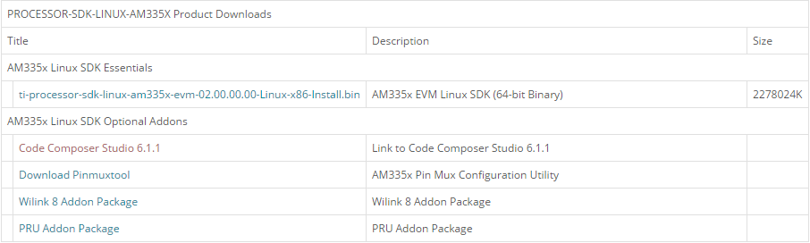Clicking this link will prompt you to fill out an export restriction form. After filling out the form, you will be given a download button to download the file and you will receive an e-mail with the download link. Download the tarball and save it to your Linux host development system.
Starting the CCS Installer
Installing CCS from the Linux Command Line
If you want to install CCS apart from the Processor Linux SDK installer, or if you decided not to install it as part of the SDK install and want to install it now, you can install CCS using the following commands:
- Open a Linux terminal and change directory to the location where the CCS tarball is located. This may be the START_HERE partition of the SD card or the location where you downloaded the file from ti.com or the wiki page.
- If the CCS files are still in a compressed tarball, extract them. <version> is the version string of the CCS installer. tar -xzf CCS<version>_web_linux.tar.gz
- Begin the installer by executing the binary (.bin) file extracted. ./ccs_setup_<version>.bin
CCS Installation Steps
NOTE The “Limited 90-day period” language in the CCS installer license agreement applies only for the case of using high-speed JTAG emulators (does not apply to use of the XDS100v2 JTAG emulator or an on-board emulator). If a debug configuration is used that requires a high-speed JTAG emulator, you will be prompted to register your software for a fee. All use of CCS (excluding use of high-speed JTAG emulators) is free and has no 90-day time limit.
When the CCS installer runs, you can greatly reduced the install time and installed disk space usage by taking the defaults as they appear in this CCS installer. The screen captures below show the default installation options and the recommended settings when installing CCS.
- The License Agreement screen will prompt you to accept the terms of the license agreement. Please read these terms and if you agree, select I accept the terms of the license agreement. If not, then please exit the installation.
- At the Choose Installation Location just hit “Next” to install at the default location. If you want the SDK installed at a different location then select “Browse” and pick another location.
- At the Processor Support screen make sure to select the Sitara ARM 32-bit processors option. You should not select “GCC ARM Compiler” or “TI ARM Compiler”, because you will be using the ARM toolchain that comes with the Processor Linux SDK installation.
- At the Select Emulators screen, select any emulators that you have and want to use. This is an optional feature you can use for debugging via JTAG.
- At the APP Center screen none of the options should be selected, click Finish to begin installation.
- Now the installation process starts and this can take some time.
- After installation is complete, you should see the following screen, hit finish and installation is complete.
Installing Emulator Support
If during the CCS installation you selected to install drivers for the Blackhawk or Spectrum Digital JTAG emulators, a script must be run with administrator privileges to allow the Linux Host PC to recognize the JTAG emulator. The script must be run as “sudo” with the following command:
sudo <CCS_INSTALL_PATH>/ccsv6/install_scripts/install_drivers.sh where <CCS_INSTALL_PATH> is the path that was chosen when the CCS installer was run.
Launching CCS
- Double-Click the Code Composer Studio v6 icon on the desktop. You will see a splash screen appear while CCS loads.
- The next window will be the Workspace Launcher window which will ask you where you want to locate your CCSv6 workspace. Use the default value.
- CCS will load the workspace and then launch to the default TI Resource Explorer screen.
- Close the TI Resource Explorer screen. This screen is useful when making TI CCS projects which use TI tools. The Processor Linux SDK uses open source tools with the standard Eclipse features and therefore does not use the TI Resource Explorer. You will be left in the Project Explorer default view.
Enabling CCS Capabilities
Each time CCS is started using a new workspace, perspectives for additional capabilities will need to be enabled. These are selectable in the Window -> Open Perspectives list.
After opening CCS with a new workspace:
- Open the Window -> Preferences menu.
- Go to the General -> Capabilities menu.
- Select the RSE Project Capability.
- Click Apply and then OK. This enables the perspectives in the Window -> Open Perspective -> Other menu, as shown below, and is needed to make the Remote System Explorer plug-ins selectable.
Importing C/C++ Projects
Importing the Projects
- Launch CCSv6 and load the default workspace.
- From the main CCSv6 window, select File -> Import… menu item to open the import dialog.
- Select the General -> Existing Projects into Workspace option.
- Click Next.
- On the Import Projects page click Browse.
- In the file browser window that is opened navigate to the <SDK INSTALL DIR>/example-applications directory and click OK.
- The Projects: list will now be populated with the projects found.
- Uncheck the following projects. They are Qt projects and are imported
using a different method. For more information, see the Hands on
with QT
training.
- matrix_browser
- refresh_screen
- Select the projects you want to import. The following screen capture shows importing all of the example projects for an ARM-Cortex device, excluding the matrix_browser project.
- Click Finish to import all of the selected projects.
- You can now see all of the projects listed in the Project Explorer tab.
Building the C/C++ Projects
In order to build one of the projects, use the following steps. For this example we will use the mem-util project.
Right-Click on the mem-util project in the Project Explorer.
Select the build configuration you want to use.
- For Release builds: Build Configurations -> Set Active -> Release
- For Debug builds: Build Configurations -> Set Active -> Debug
Select Project -> Build Project to build the highlighted project.
Expand the mem-util project and look at the mem_util.elf file in the Debug or Release directory (depending on which build configuration you used). You should see the file marked as an [arm/le] file which means it was compiled for the ARM.
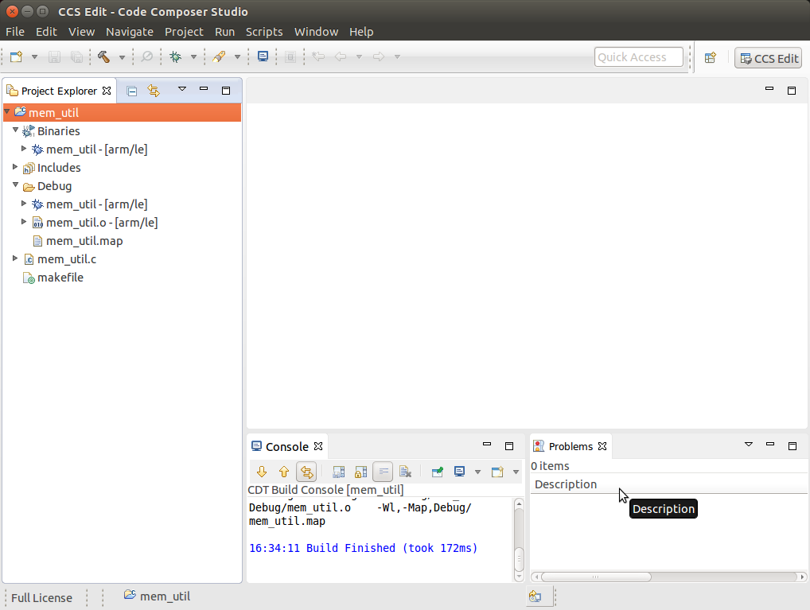NOTE You can use Project -> Build All to build all of the projects in the Project Explorer.
Installing C/C++ Projects
There are several methods for copying the executable files to the target file system:
Use the top-level Makefile in the SDK install directory. See Processor Linux SDK Top-Level Makefile for details of using the top-level Makefile to install files to a target file system. This target file system can be moved via an SD card connected to the host machine and then to the target board, transferred via TFTP, or some other method. For more information on setting up a target filesystem, see Processor SDK Linux Setup Script.
NOTE The top-level Makefile uses the install commands in the component Makefiles and can be used as a reference for how to invoke the install commands.
For all file system types, you can also transfer the file using the drag-and-drop method of Remote System Explorer. See the Remote System Explorer section below for more details.
Files can also be moved from the Linux command line. Typically, executable files are stored in the project’s Debug folder in the workspace.
Creating a New Project
This section will cover how to create a new cross-compile project to build a simple Hello World application for the target.
Configuring the Project
From the main CCSv6 window, select File -> New -> Project… menu item.
In the Select a wizard window, select the C/C++ -> C Project wizard.
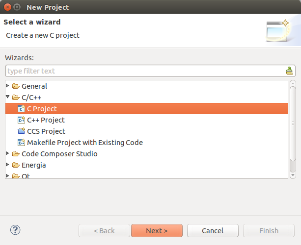Click Next.
In the C Project dialog set the following values: Project Name: helloworld Project type: Executable -> Empty Project Toolchains: Cross GCC
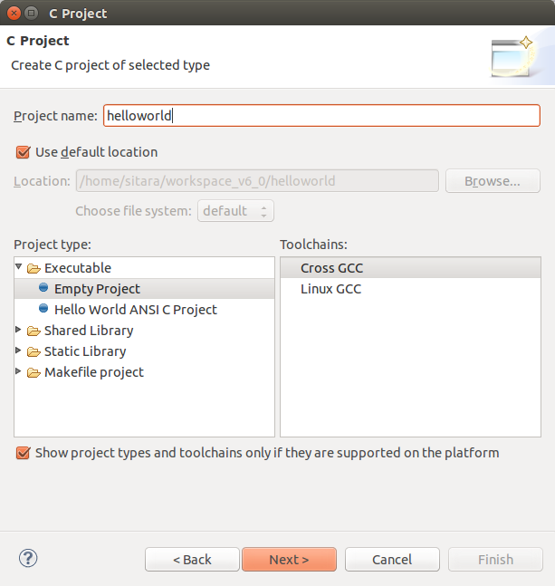Click Next.
In the Select Configurations dialog, you can take the default Debug and Release configurations or add/remove more if you want.
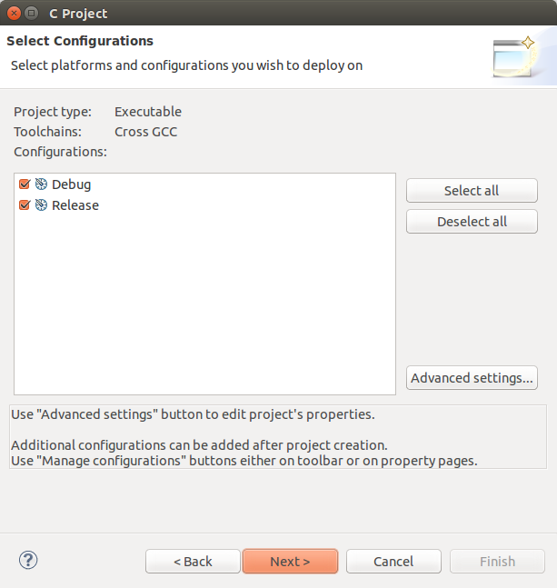Click Next.
In the Command dialog, set the following values: Tool command prefix: arm-linux-gnueabihf-.
NOTE The prefix ends with a “-“. This is the prefix of the cross-compiler tools as will be seen when setting the Tool command path.
Tool command path: /home/sitara/ti-sdk-<machine>-<version>/linux-devkit/sysroots/<Arago Linux>/usr/bin
Use the Browse.. button to browse to the Sitra Linux SDK installation directory and then to the linux-devkit/sysroots/<Arago Linux>/usr/bin directory. You should see a list of tools such as gcc with the prefix you entered above.
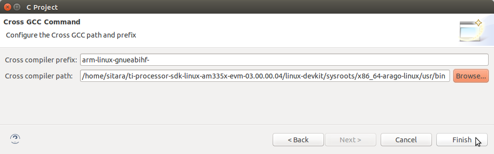Click Finish.
After completing the steps above you should now have a helloworld project in your CCS Project Explorer window, but the project has no sources.
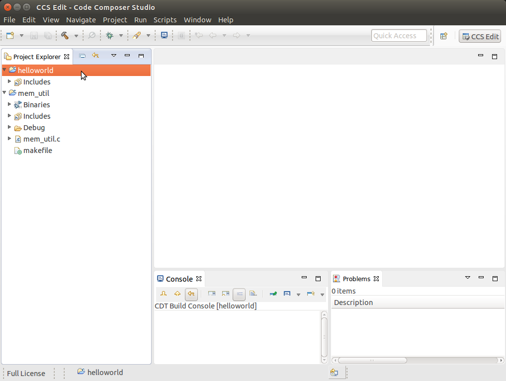
Adding Sources to the Project
From the main CCS window select File -> New> Source File menu item.
In the Source File dialog set the Source file: setting to helloworld.c
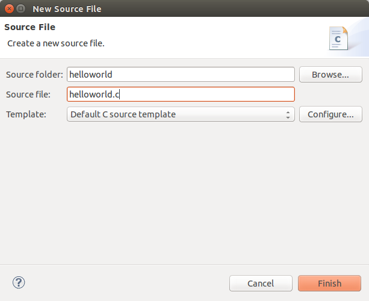Click Finish.
After completing the steps above you will have a template helloworld.c file. Add your code to this file like the image below:
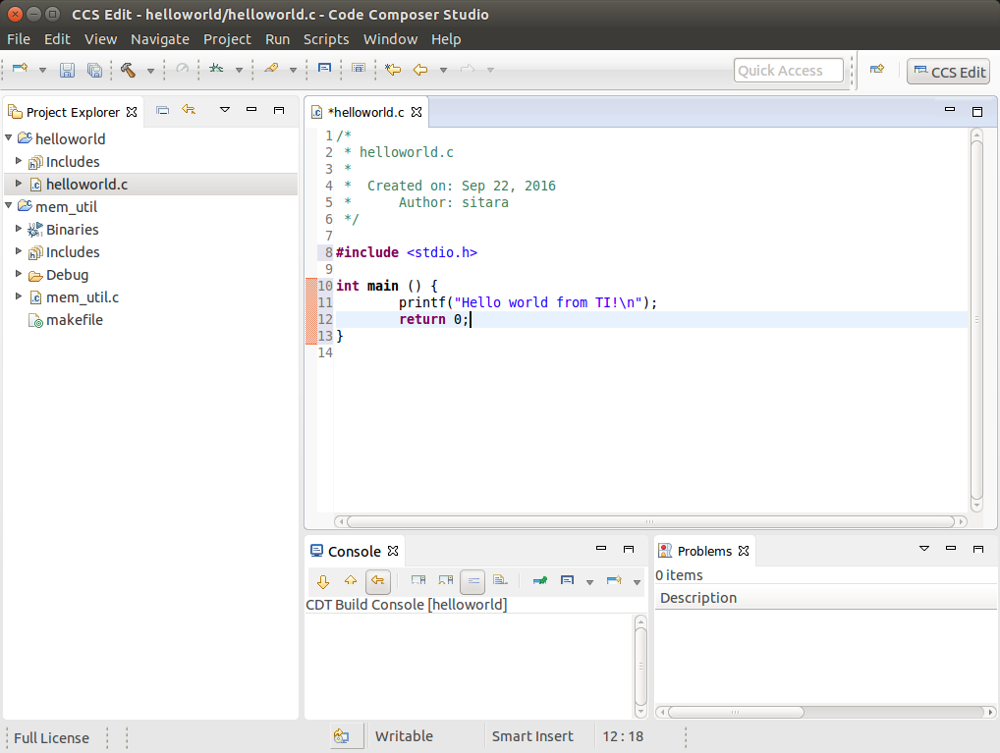Compile the helloworld project by selecting Project -> Build Project
The resulting executable can be found in the Debug directory.
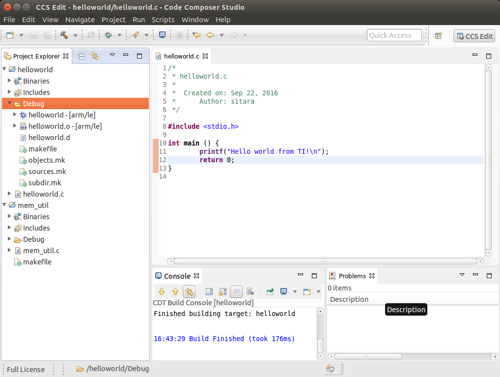
Remote System Explorer
CCS as installed with this SDK includes the Remote System Explorer (RSE) plugin. RSE provides drag-and-drop access to the target file system as well as remote shell and remote terminal views within CCS. Refer to Processor Linux SDK CCS Remote System Explorer Setup to establish a connection to your target EVM and start using RSE. There is also a more detailed training using RSE with the SDK at Processor SDK Linux Training: Hands on with the Linux SDK.
Using GDB Server in CCS for Linux Debugging
In order to debug Linux code using Code Composer Studio, you first need to configure the GDB server on both the host and target EVM side.
Please refer to Processor Linux SDK CCS GDB Setup for more information.
3.4.4.2. CCS Compiling¶
Overview
Code Composer Studio (CCS) v6.0 is the IDE integrated with the Sitara SDK and resides on your host Ubuntu machine. This wiki article covers the CCS basics including installation, importing/creating projects and building projects. It also provides links to other CCS wiki pages including debugging through both GDB and JTAG and accessing your target device remotely through remote system explorer.
Prerequisites
If you wish to use CCS along with the Sitara Linux SDK, there are some setup steps required before you attempt to install and run CCS.
- You need to be prepared for development. This means you should have
already setup your host linux machine and you should already have
your target up and running. Additionally you should be able to
communicate from host to target with both the following:
- Serial communication for linux boot and linux debug
- Ethernet communication for utilizing some of the CCS debug file sharing capabilities
See this link to meet the above requirements: Sitara_Linux_SDK_Getting_Started_Guide#Start_your_Linux_Development
Building Qt Applications
Although the Processor Linux SDK includes several Qt example applications using Code Composer Studio to build or debug these applications isn’t recommended. QT Creator is the official IDE designed to be used when developing or debugging Qt applications.Please reference to the following link for further information on all the basic to download, install, run, and debug QT applications: Hands on with Qt
Importing Existing C/C++ Projects
The Processor Linux SDK includes several example applications that already includes the appropriate CCS Project files. The following instructions will help you to import the example C/C++ application projects into CCS.
Importing the Project
From the main CCS window, select File -> Import… menu item to open the import dialog
Select the General -> Existing Projects into Workspace option
Click Next
On the Import Projects page click Browse
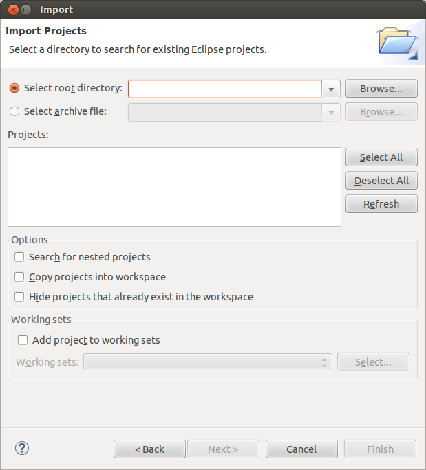In the file browser window that is opened navigate to the <SDK INSTALL DIR>/example-applications directory and click OK
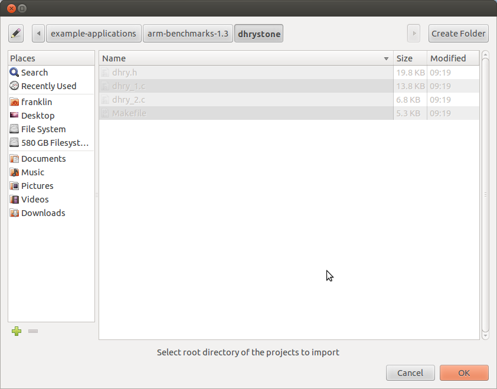
Select the projects you want to import. The following screen capture shows importing all of the example projects for an ARM-Cortex device, excluding the Qt projects.
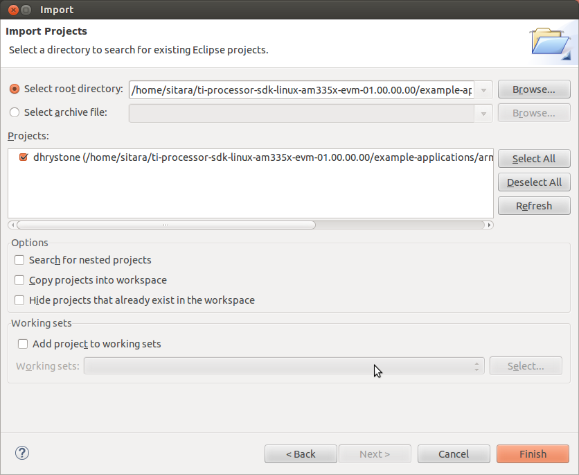
- Click Finish to import all of the selected projects.
- You can now see all of the projects listed in the Project Explorer tab.
Creating a New Project
This section will cover how to create a new cross-compile project to build a simple Hello World application for the target.
Configuring the Project
From the main CCS window, select File -> New -> Project… menu item
in the Select a wizard window select the C/C++ -> C Project wizard
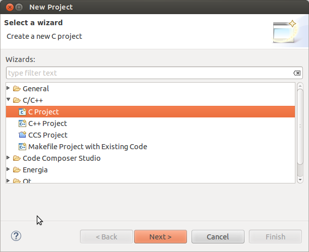Click Next
In the C Project dialog set the following values: Project Name: helloworld Project type: Cross-Compile Project
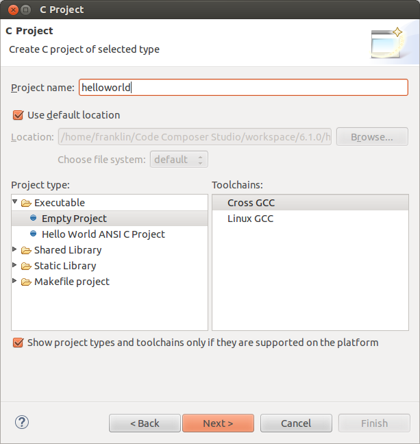Click Next
In the Command dialog set the following values: Tool command prefix: arm-linux-gnueabihf-. Note the the prefix ends with a “-“. This is the prefix of the cross-compiler tools as will be seen when setting the Tool command path Tool command path: <SDK INSTALL DIR>/linux-devkit/sysroot/i686-arago-linux/usr/bin. Use the Browse.. button to browse to the Sitra Linux SDK installation directory and then to the linux-devkit/bin directory. You should see a list of tools such as gcc with the prefix you entered above.
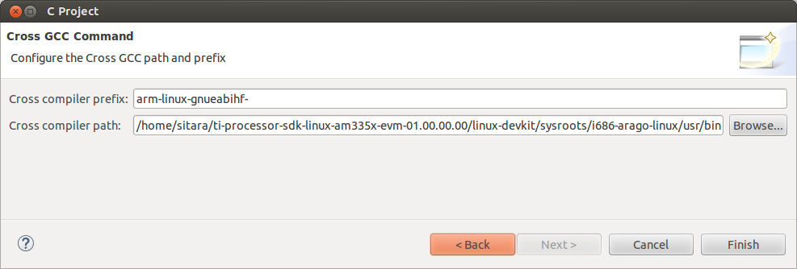Click Next
In the Select Configurations dialog you can take the default Debug and Release configurations or add/remove more if you want.
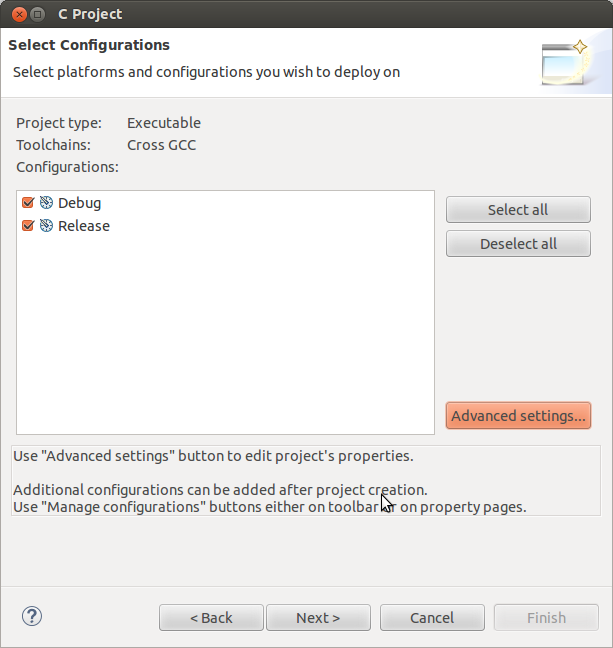Click Finish
Adding Sources to the Project
After completing the steps above you should now have a helloworld project in your CCS Project Explorer window, but the project has no sources.
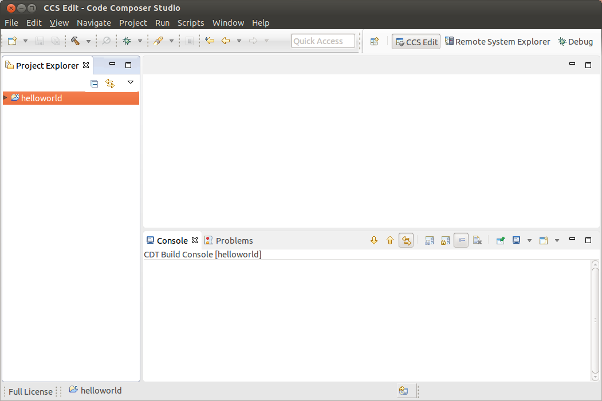From the main CCS window select File -> New -> Source File menu item
In the Source File dialog set the Source file: setting to helloworld.c
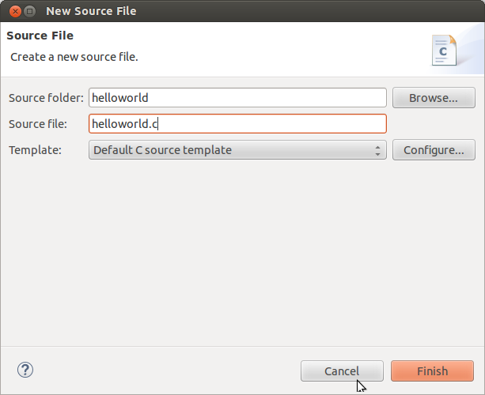Click Finish
After completing the steps above you will have a template helloworld.c file. Add your code to this file like the image below:
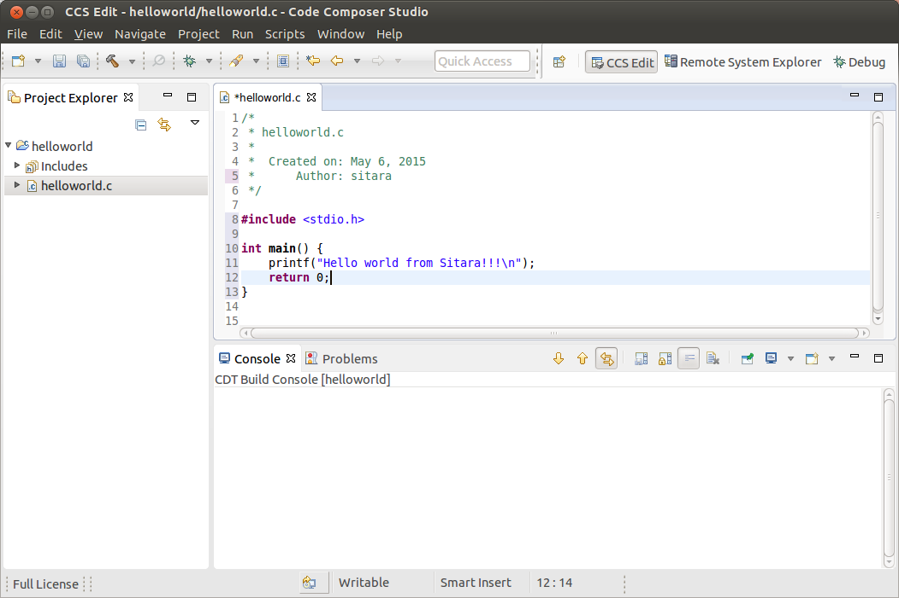
Compiling C/C++ Projects
Right-Click on the project in the Project Explorer
Select the build configuration you want to use
- For Release builds: Build Configurations -> Set Active -> Release
- For Debug builds: Build Configurations -> Set Active -> Debug
Select Project -> Build Project to build the highlighted project
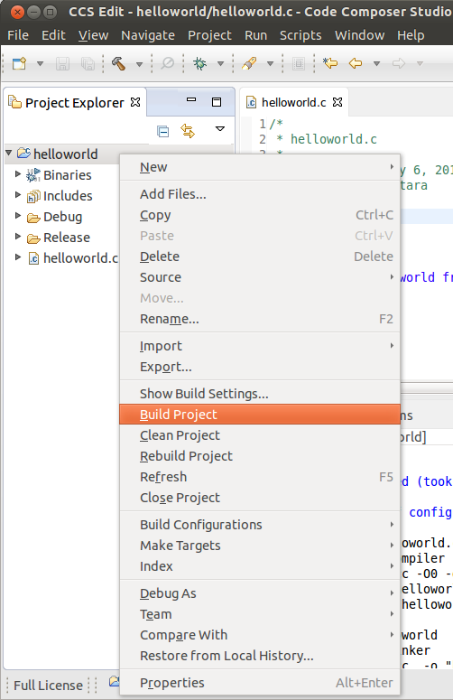- NOTE: You can use Project -> Build All to build all of the projects in the Project Explorer
Next Steps
Copying Binaries to the File system
There are several methods for copying the executable files to the target file system:
- Copying files manually to the SD card root file system
- If NFS is being used, copying the files manually to the NFS file system
- Using Code Composer Studio to automatically copy the executable to the target evm using Remote System Explorer
Remote System Explorer
CCS v6 by default includes the Remote System Explorer (RSE) plug-in. RSE provides drag-and-drop access to the target file system as well as remote shell and remote terminal views within CCS. It also provides a way for Code Composer Studio to automatically copy and run or debug an executable using a single button. Refer to How to Setup and Use Remote System Explorer to learn how to use this feature.
Debugging Source Code using Code Composer Studio
In order to debug user-space Linux code using Code Composer Studio v6, you first need to configure your project to use gdb and gdbserver included within the SDK.
Please refer to Debugging using GDB with Code Composer Studio for more information.
3.4.4.3. Remote Explorer Setup with CCS¶
Overview
Remote System Explorer (RSE) is an Eclipse plug-in that provides:
- Drag-and-drop access to the remote file system
- Remote shell execution
- Remote terminal
- Remote process monitor
Prerequisites
Before you configure RSE you should make sure the following prerequisites are met:
- Installed the Processor Linux SDK
- Installed Code Composer Studio
- Created or imported a C/C++ Project. This project should be already open.
- Connected your host PC and evm to the same network. Your PC and EVM should be on the same subnet.
- Know the IP of your evm.
- You can obtain the IP address of the EVM using matrix and selecting Settings -> Network Settings or by connecting over the serial console and using the ifconfig command.
Opening the Remote System Explorer Perspective
- Go to Window -> Open Perspective -> Other…
- In the menu window select Remote System Explorer to open this perspective.
- Click OK
- You will now have the RSE view opened
Creating a New Connection
To establish a new connection with the target EVM you must run the New Connection Wizard.
- Click File -> New -> Other…
- In the Select a wizard window select Remote System Explorer -> Connection
- Click Next
- In the Select Remote System Type window select the Linux system type
- Click Next
- In the Remote Linux System Connection window enter Host name: Enter the IP address of your target EVM. This can be determined as detailed in the **Prerequisites** section above Connection name: The default value is the same as the host name, but this can be changed to a more human readable value like Target EVM You can un-check Verify host name or leave it checked depending on whether you want to verify the IP address you entered for the Host name field.
- Do NOT click the Finish button. Click Next
- Check ssh.files to use the Secure Shell protocol for communication
- Do NOT click the Finish button. Click Next
- Check processes.shell.linux to use a shell to work with processes on the remote system
- Do NOT click the Finish button. Click Next
- Check ssh.shells to use Secure Shell to work will shell commands
- Do NOT click the Finish button. Click Next
- Check ssh.terminals to use Secure Shell to work with terminals
- Click Finish
- You will now see your EVM configuration in the RSE view
Re-Opening the C/C++ View
If when you enabled RSE and opened the RSE perspective your C/C++ view disappeared you can re-open it using the following commands. This is useful to get back to your projects list to enable copying and pasting files to transfer to the remote system.
- Select Window -> Show View -> Other…
- In the Show View dialog select C/C++ -> C/C++ Projects
- Click OK
- NOTE: If you do not like the location of the C/C++ Projects view you can drag it to another location in CCS my dragging and dropping the Tab.
Re-Opening the Remote System Explorer View
If you have closed the RSE view and wish to re-open it you can use these steps:
- Select Window -> Show View -> Other…
- In the Show View dialog select Remote Systems -> Remote Systems
- Click OK
- NOTE: If you do not like the location of the Remote Systems view you can drag it to another location in CCS my dragging and dropping the Tab.
- A Remote Systems tab appears in the CCS perspective. The target connection named Target EVM is shown in a tree structure with branches for the various Remote System functions which communicate with the target EVM using a secure SSH connection. Sftp Files - Provides a drag and drop GUI interface to the target file system. Shell Processes - Provides a listing of processes running on the remote system and allows processes to be remotely killed. Ssh Shells - Provides a Linux shell window for the remote system within CCS. Ssh Terminals - Provides a terminal window for the remote system within CCS.
Configuring with a Proxy
In the case that you are behind a proxy (most corporate networks) you may need to configure CCS to bypass all proxies. You want to make sure you also bypass the proxy for your target devices so that your connection does not attempt to go out the proxy and then come back in through the proxy.
To bypass your proxy follow the below steps:
- Click the Window -> Preferences menu item
- Go to General -> Network Connections
- Change the Active Provider from Native to Manual
- Highlight the HTTP item and click the Edit button
- enter your company’s host proxy URL and port number
- Do the same for the HTTPS item. Both items should be checked as shown below.
- In the Proxy Bypass section click Add Host…
- Add the IP address of target board (in place of xx.xx.xx.xx)
- Click OK.
Connecting to the Target
After the New Connection Wizard has been completed and the Remote System Explorer view has been opened, the new connection must be configured to communicate with the target EVM.
- Right-Click the Target EVM node and select Connect
- A dialog like the one shown below will appear
The Arago distribution that is used for our SDK is configured to use root as the usernamr and no password.
When prompted for a login use root for the user ID and leave the password blank. NOTE: you can save the user ID and password values to bypass this prompt in the future
The first time the target EVM file system is booted a private key and a public key is created in the target file system. Before connecting to the target EVM the first time, the public key must be exported from the target EVM to the Linux host system. To configure the key do
Click Yes to accept the key
Under certain circumstances a warning message can appear when the initial SSH connection is made as shown below. This could happen if the user deletes the target file system and replaces it with another target file system that has a different private RSA SSH key established (and the target board IP address remains the same). This is normal. In this case, click Yes and the public key from the target board will be exported to the Ubuntu host overwriting the existing public key.
At this point, all Remote System Explorer functions will be functional.
Target File System Access
Expand the Sftp Files -> Root node. The remote system file tree should now show the root directory. You can navigate anywhere in the remote file system down to the file level. Files can be dragged and dropped into the remote file tree. A context menu allows you to create, rename or delete files and folders.
SSH Terminals
To open an SSH Terminal view
- Right-Click the Ssh Terminals node under the target EVM connection
- Select Launch Terminal from the context menu
- Type shell commands at the prompt in the terminal window. Below is a sample command to list the contents of the remote /usr folder.
Next Steps
Debugging Source Code using Code Composer Studio
In order to debug user-space Linux code using Code Composer Studio v6, you first need to configure your project to use gdb and gdbserver included within the SDK.
Please refer to Debugging using GDB with Code Composer Studio for more information.
3.4.4.4. GDB Setup with CCS¶
Prerequisites
Before you configure RSE you should make sure the following prerequisites are met:
- Installed the Processor Linux SDK
- You have ran the SDK’s Setup Scripts
- Installed Code Composer Studio
- Created or imported a C/C++ Project. This project should be already open. For this guide a helloworld project will be used as an example.
- Connected your host PC and evm to the same network. Your PC and EVM should be on the same subnet.
- Remote System Explorer has already been setup and your connected to the board.
- The project you want to debug is already opened. Its important that the debug version of the executable is built.
Debugging using GDB and GDB Server
Creating the Debug Configuration for the Project
In CCS, select the project you wish to work with by clicking on it and highlighting it.
Select the Run -> Debug Configurations menu item. This opens a dialog box as shown below.
Double click C/C++ Remote Application. You should then see a new debug configuration named “helloworld Debug” as shown below.
Select your target connection from the Connection drop-down box. In the example the target connection is called My Target EVM.
Click the Search Project button to open the Program Selection dialog box below. Click on the “armle - /helloworld/Debug/helloworld” item and click OK.
Click the “Browse…” button for ”Remote Absolute File Path for C/C++ Application”. Navgate to the executable file on the remote file system. For this example, the executable file is found at ”/usr/bin/helloworld”.
Click the Debugger tab. On the Debugger page, the Main tab should be selected.
Click Browse next to “GDB debugger” and browse to the GDB executable. GDB should be located at: <sdk-path>/linux-devkit/sysroot/i686-arago-linux/usr/bin/arm-linux-gnueabihf-gdb
The .gdbinit file is used by GDB to locate source files and library files on the target. The .gdbinit file is created when the SDK environment script runs. Here is an example of a .gdbinit file.
Click Ok button in the browse window and then click the Close button in the Debug Configuration window.
You are now ready to debug the application!
Running the Debug Session
- Make sure that you are setup for the debug build configuration which contains symbol information. In the C/C++ perspective, click on the helloworld project to select it and
Project -> Build Configurations -> Set Active -> Debug.
- 2. Click the green “bug” icon to build the executable, transfer the
- executable to the target, start gdbserver and and start debugging.
- CCS will change to the CCS Debug perspective. The debug tab will
show the running threads and their status. The source code window will show the program halted at the first executable source code line in the main() function. The Variables window will show the local variables and their current values.
- To toggle a breakpoint, highlight the line of code in the source code window. Then click the Run -> Toggle Breakpoint menu item.
- Use the debugger “Step Over” and “Step Into” icons to step through the source code.
- To resume program execution, click the Run -> Resume menu item.
- NOTE: Do not click the Run -> Debug menu item, as that will attempt
- to start a new debug session.
- From here, you can make changes to the C source files, save the
- changes and then just click the green “Bug” icon again and you will be debugging the new executable on the target.
- (Each time you start the debugger the executable is built,
- automatically transferred to the target board and the gdbserver program is started for you.)
Stopping the Debug Session
When finished debugging the helloworld application, click the Run -> Resume menu item. To terminate the program, click the Terminate icon in CCS (this icon is a red square).
Manually Terminating Gdbserver
If the program being debugged ends abnormally or crashes CCS may be unable to automatically stop the application and or kill gdbserver. If this happens you may need to manually terminate gdbserver.
Note: These steps should only be followed if stop the application and gdbserver has failed when hitting the stop button discussed above.
Once setup, you can follow these steps to terminate gdbserver:
Change to the Remote System Explorer perspective. Right click on Shell Processes in the target connection tree and select Show in Table to open a Remote System Details window.
Double-click on “All Processes” in the table to display the list of processes runnning on the target system.
Click on “Executable Name” in the table headers to sort the list by executable name.
Find the gdbserver process. Right click on it and select Kill. This will open a “Send a Kill Signal” dialog box. Click the Kill button.
3.4.4.5. Kernel Debugging with CCS¶
Updated Toolchain
Starting with Sitara Linux SDK 6.0 the location of the toolchain has changed and for non ARM 9 devices a new Linaro based toolchain will be used. Details about the change in toolchain location can be found here. Also details about the switch to Linaro can be found here.
AM18x users are not affected by the switch to Linaro. Therefore, any references to the Linaro toolchain prefix “arm-linux-gnueabihf-” should be replaced with “arm-arago-linux-gnueabi-“.
Background
Linux Debug Overview
CCSv5 supports run mode debug (a.k.a. remote GDB debug, agent-based debug, application debug)and stop mode debug (a.k.a. JTAG debug, low-level debug). For Linux aware debug support (an extension of the stop mode debug), please read the section Linux Aware Debug below.
- In run mode debug, the user can debug one or more Linux processes. On the host side, CCSv5 launches a cross platform GDB debugger to control the target side agent (a GDB server process). The GDB server launches or attaches to the process to be debugged and accepts instructions from the host side over a serial or TCP/IP connection. The Linux kernel remains active during the debug session. The user can only examine the state of the processes being debugged.
- In the stop mode debug, CCSv5 halts the target using a JTAG emulator. The Linux kernel and all processes are suspended completely. The user can examine the state of the target and the execution state of the current process.
IMPORTANT! This page refers to CCS version 6.0.0 and newer.
Run Mode Debug
Dependencies
The following dependencies apply to Run Mode Debug:
CCS versions: CCSv5.3 or greater
Devices: any core that is capable of running Linux: Cortex-A, ARM9, C66x.
Host requirement: a cross platform GDB debugger (typically part of a GCC package like CodeSourcery or Arago)
Target requirement: a GDB server that is compatible with the GDB debugger located on the host (typically part of a SDK package like EZSDK, DVSDK, etc.)
A GCC project (see How to create GCC projects in CCSv5).
The run mode debug requires two connections to the target system: 1. One connection to the target console is used to execute Linux commands.
If using a serial port (common in all TI’s EVMs and low-cost boards like Beagleboard and Pandaboard), this connection can be done using a simple terminal program like Hyperterminal, Putty, TeraTerm or even a CCSv5 terminal plug-in.
If using Ethernet, this connection must be done using one of the programs above and configuring it for telnet or SSH. Keep in mind that the linux running on the target board requires a telnet or SSH server running on it.
2. The other connection is used by the gdb debugger to communicate with the gdb server running on the target.
This connection can be done either via Ethernet or serial port. Keep in mind the speed of a serial connection can be a lot slower and timeouts may occur.
Procedure
IMPORTANT! In certain versions CCSv5 does not enable “CDT GDB Debugging” configurations. You need to enable them from the Capabilities tab in the Preference dialog (select Window –> Preferences –> General –> Capabilities).
Bring up the Debug Configurations dialog by selecting menu Run –> Debug Configurations
Select C/C++ Remote Application
Click on the icon New launch configuration (Top left of the pane)
Set the fields C/C++ Application: andProject: respectively to the existing project in the workspace and the binary executable file
Note: If the project is already in focus (Active or highlighted) in the Project Explorer view, these fields will be already populated.
In tab Main, click on the link Select Other at the bottom where it says Using GDB (ASF) Automatic Remote Debugging Launcher. Check Use configuration specific settings and select GDB (DSF) Manual Remote Degugging Launcher. Click OK.
Note: It is possible to set up CCSv5 to automatically connect and launch the debugger in the target by leaving the settings above untouched. Check section 8 of the Eclipse CDT FAQ.
Note: Other options like Enable auto build, arguments and others can be modified at this time.
Select the Debugger tab and specify the GDB debugger as well as the GDB command file. In this case the GDB debugger from Arago is being used, but it is possible to use also CodeSourcery or other toolchain.
- Click browse next to “GDB command file” and browse to the .gdbinit
- file in the SDK install directory. When you try to browse to the .gdbinit file, you will need
- to R-Click -> Show Hidden Files to see the file. Click the Close
button and you are now ready to debug the application!
- In this example of the 06.00.00.00 SDK, the path is: /home/user/AM335X/SDK/ti-sdk-am335x-evm-06.00.00.00/linux-devkit/sysroot/i686-arago-linux/usr/bin/arm-linux-gnueabihf-gdb
- The GDB init file is located: /home/user/AM335X/SDK/ti-sdk-am335x-evm-06.00.00.00/.gdbinit
On the Debugger Connection tab, specify the IP address and port of the GDB server running on the target.
Note: the port number is arbitrary and is specified when the gdbserver is launched - unless you have a strong reason to change it, the value of 10000 is just fine.
Note: the IP address of the target can be determined from the target linux console.
IMPORTANT! Some SDKs do not have gdbserver installed by default in the supplied filesystem. Check the SDK documentation for details on how to install it.
On the target console, start the GDB server specifying the application file and the port number.
Note: make sure the port number matches the one specified in the Debugger Connection tab (10000 by default).
Note: the application under debug must be located on the target filesystem. This can be done in multiple ways: either copying it to the shared NFS directory, to the SD card being used to boot linux, etc.
Launch the debug configuration by clicking the Debug button.
- CCSv5 will launch the GDB debugger to connect to the GDB server.
- After the connection is established, you can step, set breakpoints and view the memory, registers and variables of the application process running on the target.
You may need to set the shared library (object) search path in a cross compile debug enviroment.
- Under Debug Configuration -> Debugger tab -> Shared Libraries tab enter the path to the target filesystem lib directory
- You may need a copy of the target filesystem on the local debug host
Stop Mode Debug
Dependencies
- CCS version 5.3.0 or greater. This facilitates working on either a Windows host, or a Linux host.
In addition to the procedure below, a short video clip is located here.
- Devices: any core that is capable of running Linux: Cortex-A, ARM9, C66x.
- Host system requirements:
- Target system requirements: a Linux distribution running on the target. Kernel releases 2.6.x and 3.1.x were tested.
Procedure
vmlinux).Compiling the Linux kernel with debug information
- Enable Kernel hacking –> Compile the kernel with debug info
Also, if the kernel is in experimental mode, you should enable the option below:
- Kernel hacking —> Enable stack unwinding support
To check if the kernel is in this mode, check if the option below is enabled.
- General Setup —> Prompt for development and/or incomplete code/drivers
Note: for kernel 3.1.0 and above, there is an additional option that must be set:
- Kernel Hacking —> Enable JTAG clock for debugger connectivity
Note: for kernel 3.2.0, the option Enable stack unwinding support shown above is only available if the kernel is built with ARM EABI support. To enable it, go to:
- Kernel Features —> Use the ARM EABI to compile the kernel
Note: for kernel 3.2.0, the option Compile the kernel with debug info shown above is only available if the option Kernel Debugging is enabled. To do it, go to:
- Kernel hacking —> Kernel Debugging
Creating a source code project for the kernel
Create a new C/C++ project by selecting File –> New –> Project and select Makefile Project with Existing Code. Click Next.
In the section Existing Code Location, click on Browse… and point to the root directory of the Linux kernel source tree. Leave the toolchain as <none> and click Finish.
To prevent CCS from building the Linux kernel automatically before launching the debugger, this option must be disabled. Highlight the Linux kernel project in the Project Explorer view, right click and select Build Options…, then select C/C++ Build in the left tree and the tab Behaviour. Uncheck all the build rules boxes and click OK.
Note: it is possible the C-syntax error checker built into Eclipse is also activated, which may throw errors while launching the debugger. It can be configured by right-clicking on the project –> Build Options… –> click on Show Advanced Settings –> C/C++ General –> Code Analysis. It can also be completely disabled by going to the submenu Launching and then unchecking the box Run as you type (selected checkers). |
Associating the Kernel Project with the Target
At this point, a target configuration file (.ccxml) that corresponds to your emulator and board must be ready.
In this example a Beaglebone (AM3359) was used, together with the Sitara support package available at the CCS download page. Note: check the Getting Started Guide to learn how to create one. Important! When debugging a target running any High-level OS (Linux, WinCE, Android, etc.) or its support/initialization routines (u-boot, WinCE bootloader, etc.) you should not rely on GEL files in the target configuration (.ccxml) for device and peripheral initializations that will disrupt your environment. Details on how to add/remove GEL files are shown in the section Advanced target configurations –> Adding GEL files to a target configuration of the CCSv5 Getting Started Guide.
Select menu Run –> Debug Configurations
Select Code Composer Studio - Device Debugging and click on the button New Launch configuration at the top left.
Click on the button File System… near the box Target Configuration to select the target configuration file (.ccxml) for your hardware.
Optional: give a meaningful name for the Debug Configuration at the box Name:
Optional: depending on the target configuration, at this point a list of cores will be shown and can be disabled to improve the debugger performance.
Select the tab Program to assign the Linux kernel source code to the Debug configuration.
On the drop-down menu Device select the core where the Linux is running. In this example the core Texas Instruments XDS100v2 USB Emulator_0/CortxA8 was selected
Click on the button Workspace… near the box Project to select the Linux kernel project
- In this example it was used the project
linux-3.1.0-psp04.06.00.03.sdk - For the latest version, use
/home/user/AM335X/SDK/ti-sdk-am335x-evm-06.00.00.00/board-support/linux-3.2.0-psp04.06.00.11
- In this example it was used the project
Click on the button File System… near the box Program to select the EABI executable
vmlinuxthat contains the debug symbolsNote:If the Linux kernel was rebuilt, the location of this file is usually in the main directory of the Linux kernel source tree. /home/nick/AM335X/SDK/ti-sdk-am335x-evm-06.00.00.00/board-support/linux-3.2.0-psp04.06.00.11
Important! It is common that a file
vmlinuxis also provided in the boot partition of the SD card shipped with the development board (where the fileuImageis also located). However, check its size; if it is relatively small when compared to uImage (3, 4 times larger) it is possible it does not carry debug information. A typical size for thevmlinuxfile usually starts at 30~40MB.At last, check the box Load symbols only. Click Apply.
Now the debug session is ready to be launched. At this point, the emulator must be connected, the target board powered up and Linux running (typically in the command prompt). Click on the Debug button.
Mixed Mode Debug
The stop mode debug can be used concurrently with the run mode debug.
The user can set breakpoints in the user process using the run mode
debug and breakpoints in the kernel using the stop mode debug.
To demonstrate this, a call to the function sleep() is added to the
Linux application used earlier in the Run mode debug and a breakpoint is
added to the function sys_nanosleep() (file <kernel/hrtimer.c>).
This will provoke a halt on the breakpoint set in the Stop Mode debug
caused by a function call from the Linux application in the Run mode.
1. Search for the function call hrtimer_nanosleep() on the file
<kernel/hrtimer.c> that belongs to the Linux kernel project.
2. With the Stop mode debug session still running, halt the target.
Right-click on the line of the call, select Breakpoint (Code Composer
Studio) then Hardware Breakpoint. Resume the target execution.
3. Start a Run mode debug session with the application that has the
sleep() function call. After launching, the Debug view should show
two debug sessions as in the screen below:
4. Put the target to run. When the application calls sleep() the
Stop mode debug session should halt at the breakpoint, as shown in the
screen below:
Important! Keep in mind that halting the Linux kernel while GDB/GDBserver are running may cause communication timeouts, clock skews or other glitches inherent from the fact that the host system and other peripherals are still running. |
Linux Aware Debug
Limitations and Known Issues
1. When performing Run Mode debug, by default Eclipse looks in the host PC root directory for runtime shared libraries, thus failing to load these when debugging the application in the target hardware. The error messages are something like:
warning: .dynamic section for “/usr/lib/libstdc++.so.6” is not at the expected address (wrong library or version mismatch?) warning: .dynamic section for “/lib/libm.so.6” is not at the expected address (wrong library or version mismatch?) warning: .dynamic section for “/lib/libgcc_s.so.1” is not at the expected address (wrong library or version mismatch?) warning: .dynamic section for “/lib/libc.so.6” is not at the expected address (wrong library or version mismatch?) When SDKs setup.sh script, it should automatically generate a .gdbinit file for you in the base directory of the SDK.
The file will contain the line: set sysroot <SDK-PATH>/targetNFS.
An example would be
I